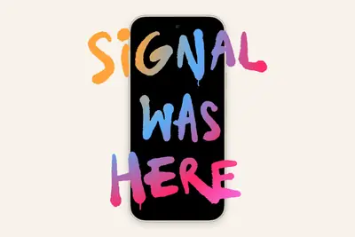
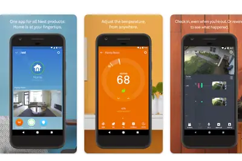
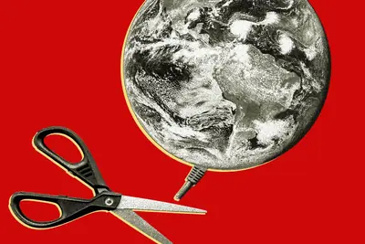
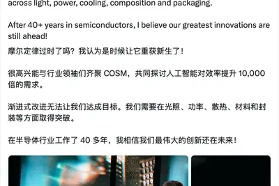
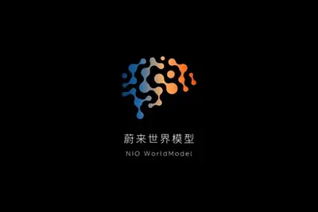
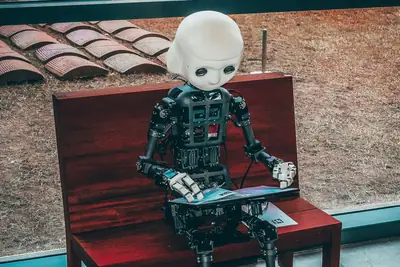

全部主題
Anthropic 於 11 月 19 日正式在美國那斯達克掛牌上市，創全球資本市場史上最大規模 IPO 紀錄 […]
“IT早报”时间，大家好，现在是 2026 年 11 月 22 日星期日，今天的重要科技资讯有： 1. 不只是华为，消息称其他厂商也考虑为旗舰产品线引入阔直板形态 博主 @数码闲聊站 21 日下午爆料称，当下手机市场“阔形态”升级势不可挡：除了华为，其他家也考虑在正代旗舰线加入阔形态，与常规直板机双线并行。>> 查看详情 2. “几乎所有人将永久失业”：Anthropic 研究员预测 2027 年底 AI 在几乎所有领域超越顶尖专家 11 月 15 日在接受 Palisade Research 采访时，Anthropic 公司技术团队成员 Tao Lin
IT之家 11 月 22 日消息，开源端到端加密聊天应用 Signal 近日推出 iOS / Android 版更新，默认关闭应用程序内截图功能，以阻止 Siri AI 和 Gemini 等 AI 智能体读取用户私人消息。 Signal 总裁 Meredith Whittaker 表示，系统级 AI 智能体的影响力正不断扩大，这对 Signal 长期建立的隐私机制构成威胁，因为这些智能体可能在用户毫不知情的情况下访问私人对话。 在 Signal 8.37（IT之家注：iOS 27 系统）中， 应用默认启用了“阻止 Siri AI”设置 ，用户无法在 Si

IT之家 11 月 22 日消息，谷歌近日在官网支持页面公布了智能家居应用程序 Nest 的最新动态。官方宣称， 独立版 Nest（App、网页端）将于 2027 年 1 月 15 日停止服务 ，相关功能将整合进 Google Home 应用。 IT之家注意到，谷歌还将在 2027 年 8 月 2 日停止智能音箱等设备的 Google 助理服务，届时 Google Home 和 Google Gemini 将全面接管智能音箱等设备。 谷歌表示，用户此前于 Nest 设置的恒温器、摄像头、门铃、智能门锁和烟雾报警器等智能家居，都将自动迁移至 Google

Signal is limiting users' ability to take screenshots in both its Android and iOS apps.
We got two very different pictures of Nvidia — the company’s latest earnings report vs. the tech executives loudly calling for Jensen Huang’s return.
One of the items on the agenda for UN diplomats meeting in Geneva this week was working towards rules regarding the use of autonomous weapons, or so-called "killer robots." Eventually, representatives left the meetings agreeing to "start discussing options" after a largely fruitl
We created a list of the most notable AI agents that can live in your text messages, from general assistants to agents designed for families, travel, and work.
An actor has licensed his face to a microdrama startup — in a trend that's already popular in China. Experts question the long-term consequences if this becomes a trend in Hollywood, too.
Today, I’m talking with Hayden Field, The Verge’s senior AI reporter, about the Anthropic IPO for the third and final episode in our series about AI in real life. The AI lab behind Claude went public on the Nasdaq last Thursday. The numbers are gigantic, but not really that impor
IT之家 11 月 21 日消息，据路透社报道，当地时间 21 日，韩国总统李在明前往韩国东南部城市蔚山，视察当地一座在建数据中心，并敦促韩国加快在全球 AI 竞赛中的步伐。“ 全世界都在竞相角逐，速度至关重要 。” 数据中心是芯片需求的重要来源。李在明希望，SK 建设的蔚山项目能够取得成功，进而吸引全球 AI 企业加大投资。 蔚山数据中心由 SK 集团与亚马逊云科技共同开发。韩国科学技术信息通信部去年公布的估算显示，项目到 2029 年的总投资额预计为 7 万亿韩元 （IT之家注：现汇率约合 351.26 亿元人民币） ，计划于 2027 年下半年投入
Chess.com is ready to go a lot bigger than chess. After launching Gambit, a gambling-free poker site, earlier this year, the company is now adding 10 more games: backgammon, checkers, go, hearts, mahjong, shogi, sudoku, solitaire, xiangqi, and a Scrabble alternative called word.
AI is forcing companies to patch their systems faster as attackers race to exploit newly discovered vulnerabilities. Welcome to internet outage hell.

IT之家 11 月 21 日消息，韩媒 Economy Tribune 今天（21 日）下午爆料称，三星电子 2027 年至 2029 年的大部分存储芯片产能 都已被合同预订 。随着 AI 数据中心投资持续扩大，存储芯片供应短缺长期难以缓解，部分客户开始要求签订长期供货协议（LTA）， 希望将供货保障期限延长至 2031 年 。 供应紧张的局面不仅出现在高带宽内存（HBM）领域，通用 DRAM 和企业级 NAND 闪存同样面临短缺。主要存储芯片制造商的议价能力预计将因此进一步增强。 据知情人士 21 日透露，三星电子 2027 年至 2029 年的大部分
IT之家 11 月 21 日消息，据美国 CNBC 报道，当地时间 11 月 20 日，欧洲央行行长克里斯蒂娜 · 拉加德在法兰克福欧洲银行业大会发表卸任前最后一次演讲时呼吁， 欧盟应利用公共资金，在大型芯片制造厂和数据中心项目中率先承担首轮损失，以此吸引私人资本 。 她指出：“如果某项挑战需要欧洲层面的解决方案，我们就应该加强有能力提供这种方案的欧洲机构。在技术领域，芯片制造厂和数据中心项目需要 在整个欧洲范围内达到一定规模 。因此，欧洲应建立跨区域的公私合作伙伴关系，由公共资金，包括欧盟预算资金，先行承担项目的首轮损失，吸引私人资本参与。” 拉加德此
IT之家 11 月 21 日消息，据 Wccftech 报道，前英特尔首席执行官帕特 · 基辛格（Pat Gelsinger）表示，随着人工智能需要“ 10,000 倍的效率飞跃 ”，渐进式的芯片增益将无法满足需求，他同时否认了摩尔定律已走向终结。 在 2026 年 COSM 科技峰会上，帕特 · 基辛格出席了一场题为“现实检验：超越芯片（Reality Check: Beyond Chips）”的炉边谈话。 基辛格在谈话中反驳了半导体微缩已触及物理极限的观点， 他认为 AI 需要的不是常规的代际升级，而是计算效率实现激进的 10,000 倍跃升 。他还

IT之家 11 月 21 日消息，华中科技大学与阿里巴巴集团于 11 月 18 日签署合作协议，聚焦 AI 安全共建“智能攻防与前沿安全联合研究中心”，首批启动 9 个课题。 IT之家获悉，联合研究中心首批启动的 9 个课题，覆盖 大模型安全攻防、智能体与终端安全、智能化系统与软件安全、数据协同与隐私保护 四大方向，以下为官方公开的案例： 当 AI 智能体开始替用户操作手机、完成复杂任务时，屏幕画面可能被伪造，操作过程也可能受到恶意诱导。对此，联合研究中心设立“图像对抗样本与终端威胁研判”课题，探索相关安全风险的识别与防护技术。 当用户在购物、地图、外卖
IT之家 11 月 21 日消息，国家数据局党组书记、局长刘烈宏出席昨日（20 日）在湖南长沙举办的 2026 世界计算大会开幕式并致辞。 刘烈宏表示，词元打通了算力、模型、数据间的价值传导链路，成为数智经济的价值锚点和数据价值的显性化载体。 一是词元发展初步起势，围绕词元生产、流通、消费的产业生态正加速构建，拓展了经济增长新空间。 二是“词元工厂”快速兴起，将算力租赁、模型供给、数据能力升级为词元生产服务，成为产业组织新形态。 三是词元催生服务交付新模式，行业高质量数据集经模型训练推理转化为可计量、可交付的智能服务，形成以词元计量、按调用计价的交付方式
IT之家 11 月 21 日消息，蔚来今日宣布，在即将于 11 月 25 日举办的 NIO IN 2026 蔚来创新科技日上， 将正式发布 NWM 3.0 世界模型 。 官方表示，NWM 3.0 将会在 模型架构、闭环训练、跨域融合 等方面，带来蔚来智能辅助驾驶团队对物理世界人工智能的最新思考与探索成果，敬请期待。 据IT之家此前报道，2024 年 7 月， 蔚来发布行业首个智能辅助驾驶世界模型 ——「蔚来世界模型 NWM」（NIO World Model）。 据介绍，蔚来世界模型是一个多元自回归生成模型，可全量理解数据、长时序推演和决策， 具备像人一样

華盛頓大學（University of Washington）最新研究指出，當人工智慧（AI）模型被用於面試、 […]
一項最新研究揭露，人工智慧（AI）模型的表現並非始終如一，而是會強烈受到「是否被監看」的影響。研究團隊在針對 […]

機構雖然能夠監察與 AI 模型相關的大部分活動，卻往往無法還原由提出請求到產生結果之間的過程，因此難以獨立驗證 […]
債權人擔憂，若馬斯克日後將這批晶片送入太空部署資料中心，一旦 SpaceX 違約，債權人恐難以取回並出售晶片抵債，因此試圖在融資契約中加入禁止將抵押晶片送入太空的限制。